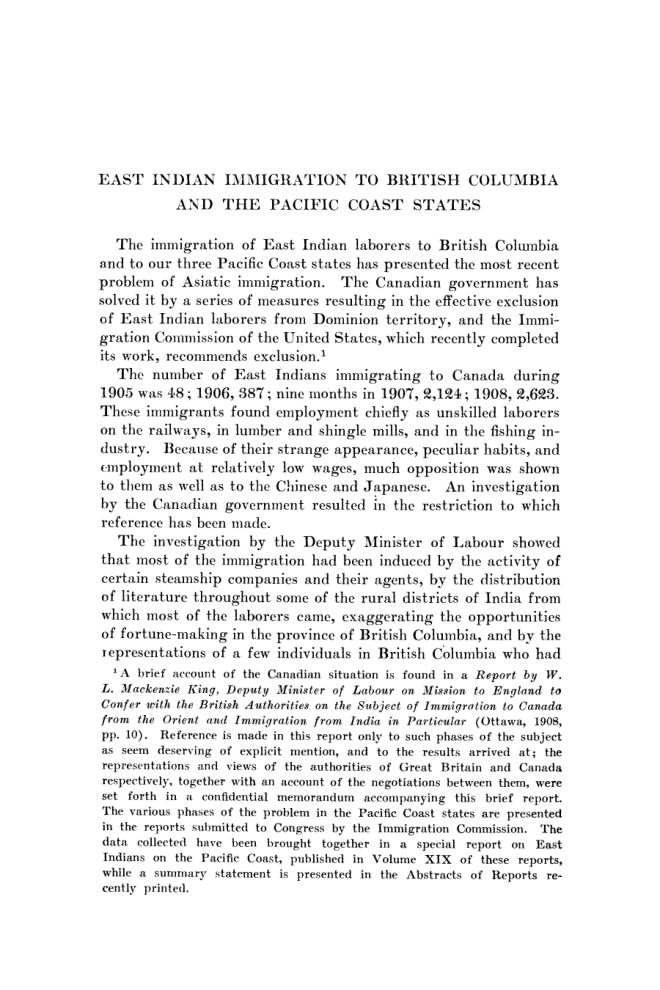

Millis, 1911: de 2.623 chegadas a seis, a regra da viagem contínua
Leitura: 6 min
Millis relata como o Canadá praticamente fechou a entrada de trabalhadores da Índia em 1908, com duas regras administrativas, e resume os dados da Comissão de Imigração dos EUA sobre emprego e salários no Pacífico.


Em 1908, segundo H. A. Millis, chegaram ao Canadá 2.623 trabalhadores vindos da Índia. Em 1909, chegaram seis. Nos cinco primeiros meses de 1910, um. A queda não veio de uma lei nova votada no Parlamento, mas de duas medidas administrativas. Em cinco páginas do primeiro número da American Economic Review, Millis, de Stanford, resume o que o governo canadense e a Comissão de Imigração dos EUA apuraram sobre esse fluxo.
Quantos chegaram, e por quê?
Millis relata uma série curta e de crescimento rápido: 48 imigrantes em 1905, 387 em 1906, 2.124 em apenas nove meses de 1907. Eles se empregavam sobretudo como trabalhadores não qualificados nas ferrovias, nas serrarias e fábricas de telhas de madeira (shingle mills) e na pesca da Colúmbia Britânica.
A investigação do vice-ministro do Trabalho canadense, citada por Millis, atribuiu a maior parte do fluxo a agentes de companhias de navegação, à distribuição de folhetos em distritos rurais da Índia que exageravam as oportunidades de enriquecer na província e a alguns intermediários locais que trouxeram trabalhadores sob acordos de emprego. Muitos, relata o autor, sofreram com hostilidade, clima severo e empregos inadequados.
Como o Canadá fechou a porta sem proibir?
O Canadá dependia da cooperação do governo britânico. Em conferências na Inglaterra, na primavera de 1908, o governo da Índia comprometeu-se a desfazer as falsas impressões difundidas pelos folhetos, e as companhias de navegação foram informadas de que sua atividade era vista com desagrado. Segundo Millis, os objetivos declarados eram evitar as privações, prevenir atritos e proteger o padrão de vida dos trabalhadores locais.
A medida mais forte foi aplicar a seção 38 da Lei de Imigração, que permitia excluir quem chegasse “de outro modo que não por viagem contínua desde o país de que são naturais” (otherwise than by continuous journey from the country of which they are natives), com passagem direta comprada nesse país. Como não havia viagem contínua possível da Índia ao Canadá, observa Millis, a regra era efetiva. Uma ordem do conselho de 3 de junho de 1908 elevou ainda o dinheiro exigido no desembarque.
O que aconteceu do lado americano?
Até a restrição canadense, quase todos os que entravam nos Estados Unidos vinham da Colúmbia Britânica, em busca de clima menos rigoroso, emprego mais adequado e salários mais altos. Depois, a maioria passou a chegar diretamente a São Francisco. Millis mostra que o fluxo oscilou com a interpretação da lei nos portos: em 1908 os fiscais começaram a barrar muitos, sob o risco de se tornarem um encargo público, e no ano fiscal de 1909–1910, com tratamento mais favorável em São Francisco, as entradas subiram a 1.782. A partir de julho de 1910, nova mudança de orientação voltou a reduzi-las.
Onde trabalhavam e quanto ganhavam?
Pelos levantamentos da Comissão de Imigração, cerca de 85% dos trabalhadores vinham da classe agrícola em seu país. O emprego concentrava-se no trabalho de pátio das serrarias, em turmas de manutenção e construção ferroviária, na beterraba açucareira da Califórnia, na colheita de uva e frutas, na capina e no corte de lenha. Nas serrarias do Noroeste, relata Millis, recebiam mais que os japoneses e menos que os demais trabalhadores comuns; com o tempo, quase desapareceram delas e das ferrovias.
Em julho de 1910, a grande maioria dos cerca de 5.000 nos estados do Oeste estava na Califórnia, como mão de obra temporária nas fazendas, para cobrir falta de braços ou enfraquecer a posição dos japoneses no mercado de trabalho. Vinham sem família, com a meta de juntar uma pequena soma e voltar; a maioria remetia os ganhos assim que os recebia, às vezes sem reserva para os períodos de desemprego, que podiam durar semanas. O gasto total era menor que o de outros grupos masculinos, mas a diferença era pequena quando a comparação se limitava ao mesmo tipo de trabalho.
A tese de Millis é que esses trabalhadores ocupavam um lugar pequeno e inseguro na oferta de mão de obra do Oeste, com emprego irregular e baixa capacidade competitiva, e que encontrariam fortes barreiras à integração. Daí a recomendação da Comissão: que se chegasse a “um entendimento com o governo britânico” (an understanding should be reached with the British Government) para impedir a vinda desses trabalhadores. Seria pedir aos britânicos, conclui o autor, o que já haviam feito por um de seus domínios.
Na minha leitura
Na minha leitura, o artigo vale menos pela tese e mais pelo que mostra sobre o desenho de políticas. Um fluxo de alguns milhares de pessoas por ano bastou para mobilizar dois governos, e o instrumento escolhido não foi a proibição nominal, mas regras de aparência neutra, como a passagem direta e a quantia mínima no desembarque, calibradas para produzir o mesmo efeito. Do lado americano, a série de Millis mostra que a discricionariedade na aplicação da lei nos portos movia as entradas tanto quanto a própria lei: o mesmo texto legal admitiu muitos em 1909–1910 e poucos depois de julho de 1910.
Há também uma lição de mercado de trabalho. O emprego descrito é residual e temporário, usado para cobrir picos de colheita ou para disputar salários com outro grupo de imigrantes, e as remessas imediatas deixavam o trabalhador sem colchão para o desemprego sazonal. É o retrato de um migrante que vem para acumular uma soma e voltar, e cuja oferta de trabalho responde a salários relativos entre fronteiras.
Glossário
- Viagem contínua
- Exigência canadense de que o imigrante viesse direto do país de origem, com passagem comprada lá; inviável a partir da Índia em 1908.
- Ordem do conselho
- Ato do Executivo canadense (order in council), com força normativa sem votação parlamentar.
- Encargo público
- Critério da lei americana para barrar quem pudesse depender de assistência pública (public charge).
- Shingle mill
- Fábrica de telhas de madeira, comum no Noroeste do Pacífico.
- Remessa
- Parte da renda do migrante enviada à família no país de origem.
Fontes
- East Indian Immigration to British Columbia and the Pacific Coast States — H. A. Millis (Leland Stanford Junior University) (pp. 72–76). JSTOR · Internet Archive (PDF)
- Edição completa, com os demais artigos: Nº 112 do Arquivo.
Documento em domínio público (EUA, publicado antes de 1931), via JSTOR Early Journal Content e Internet Archive. Resumo e comentário do autor deste site, sem afiliação com a American Economic Association. Encontrou um erro? Escreva: a correção é publicada no próprio texto, com data.
← Kemmerer, 1911: as cinco estações do dinheiro em Nova York ↑ Nº 112 · A primeira American Economic Review: tarifas, juros e irrigação